Schede di lettura
Testo informativo con spazi vuoti e banca delle parole, comprensione all'ascolto con codice QR (audio gratuito) e crucipuzzle, con soluzioni.
2.559 materiali
Tema
Classe

Lavatrice – Scheda didattica classe quarta e quinta: testo con spazi vuoti e crucipuzzle

ß – Scheda didattica classe quarta e quinta: testo con spazi vuoti e crucipuzzle

Zurigo – Scheda didattica classe quarta e quinta: testo con spazi vuoti e crucipuzzle

Zug – Scheda didattica classe quarta e quinta: testo con spazi vuoti e crucipuzzle

Zona torrida – Scheda didattica classe quarta e quinta: testo con spazi vuoti e crucipuzzle

Zona temperata – Scheda didattica classe quarta e quinta: testo con spazi vuoti e crucipuzzle

Zirconio – Scheda didattica classe quarta e quinta: testo con spazi vuoti e crucipuzzle

Zinédine Zidane – Scheda didattica classe quarta e quinta: testo con spazi vuoti e crucipuzzle
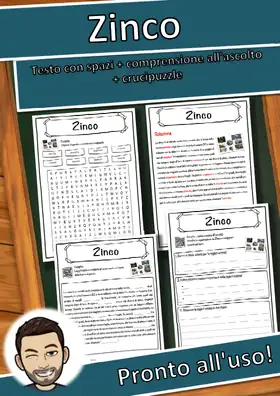
Zinco – Scheda didattica classe quarta e quinta: testo con spazi vuoti e crucipuzzle
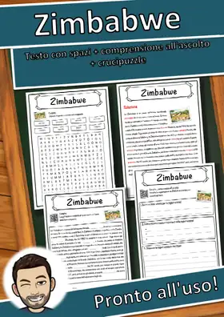
Zimbabwe – Scheda didattica classe quarta e quinta: testo con spazi vuoti e crucipuzzle
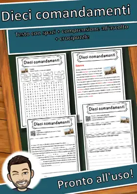
Dieci comandamenti – Scheda didattica classe quarta e quinta: testo con spazi vuoti e crucipuzzle
Zar – Scheda didattica classe quarta e quinta: testo con spazi vuoti e crucipuzzle
Zambia – Scheda didattica classe quarta e quinta: testo con spazi vuoti e crucipuzzle
Yom Kippur – Scheda didattica classe quarta e quinta: testo con spazi vuoti e crucipuzzle
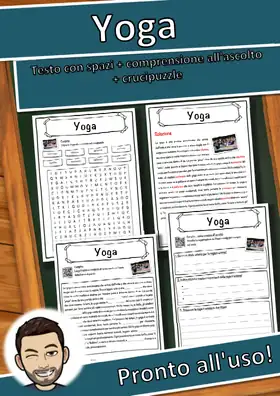
Yoga – Scheda didattica classe quarta e quinta: testo con spazi vuoti e crucipuzzle
Yo-yo – Scheda didattica classe quarta e quinta: testo con spazi vuoti e crucipuzzle
Yen – Scheda didattica classe quarta e quinta: testo con spazi vuoti e crucipuzzle
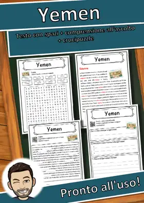
Yemen – Scheda didattica classe quarta e quinta: testo con spazi vuoti e crucipuzzle
Xeno – Scheda didattica classe quarta e quinta: testo con spazi vuoti e crucipuzzle

Winterthur – Scheda didattica classe quarta e quinta: testo con spazi vuoti e crucipuzzle
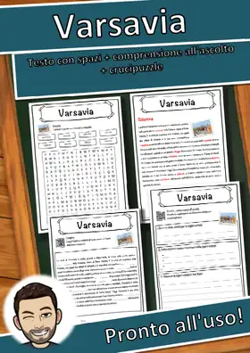
Varsavia – Scheda didattica classe quarta e quinta: testo con spazi vuoti e crucipuzzle
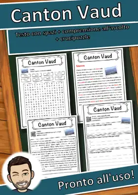
Canton Vaud – Scheda didattica classe quarta e quinta: testo con spazi vuoti e crucipuzzle
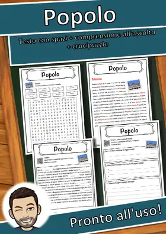
Popolo – Scheda didattica classe quarta e quinta: testo con spazi vuoti e crucipuzzle
Vladivostok – Scheda didattica classe quarta e quinta: testo con spazi vuoti e crucipuzzle
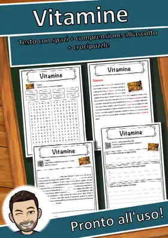
Vitamine – Scheda didattica classe quarta e quinta: testo con spazi vuoti e crucipuzzle
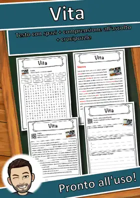
Vita – Scheda didattica classe quarta e quinta: testo con spazi vuoti e crucipuzzle
Quadrilatero – Scheda didattica classe quarta e quinta: testo con spazi vuoti e crucipuzzle
Vienna – Scheda didattica classe quarta e quinta: testo con spazi vuoti e crucipuzzle
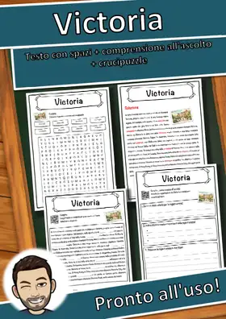
Victoria – Scheda didattica classe quarta e quinta: testo con spazi vuoti e crucipuzzle
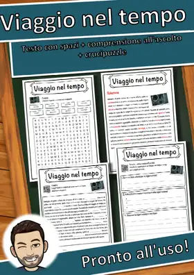
Viaggio nel tempo – Scheda didattica classe quarta e quinta: testo con spazi vuoti e crucipuzzle
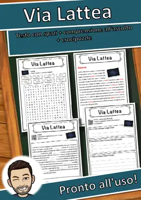
Via Lattea – Scheda didattica classe quarta e quinta: testo con spazi vuoti e crucipuzzle
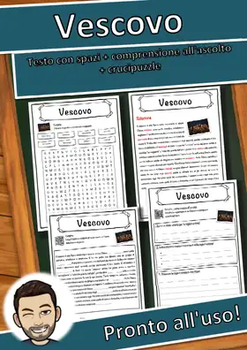
Vescovo – Scheda didattica classe quarta e quinta: testo con spazi vuoti e crucipuzzle
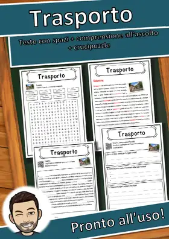
Trasporto – Scheda didattica classe quarta e quinta: testo con spazi vuoti e crucipuzzle
Verdi Svizzeri – Scheda didattica classe quarta e quinta: testo con spazi vuoti e crucipuzzle
Crimine – Scheda didattica classe quarta e quinta: testo con spazi vuoti e crucipuzzle
Urtica – Scheda didattica classe quarta e quinta: testo con spazi vuoti e crucipuzzle
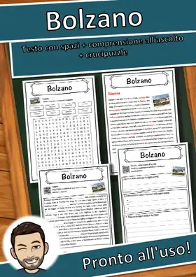
Bolzano – Scheda didattica classe quarta e quinta: testo con spazi vuoti e crucipuzzle
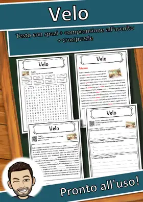
Velo – Scheda didattica classe quarta e quinta: testo con spazi vuoti e crucipuzzle
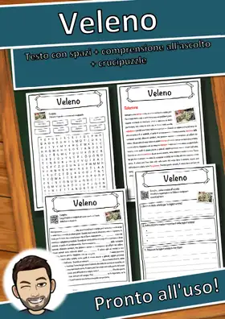
Veleno – Scheda didattica classe quarta e quinta: testo con spazi vuoti e crucipuzzle
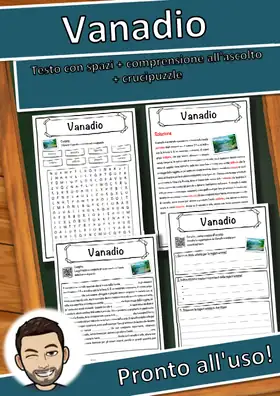
Vanadio – Scheda didattica classe quarta e quinta: testo con spazi vuoti e crucipuzzle
Valle – Scheda didattica classe quarta e quinta: testo con spazi vuoti e crucipuzzle
Uzbekistan – Scheda didattica classe quarta e quinta: testo con spazi vuoti e crucipuzzle
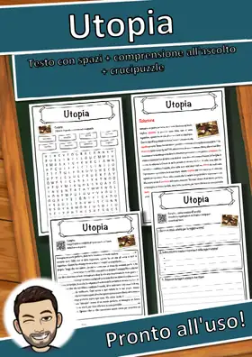
Utopia – Scheda didattica classe quarta e quinta: testo con spazi vuoti e crucipuzzle
Untervaldo – Scheda didattica classe quarta e quinta: testo con spazi vuoti e crucipuzzle
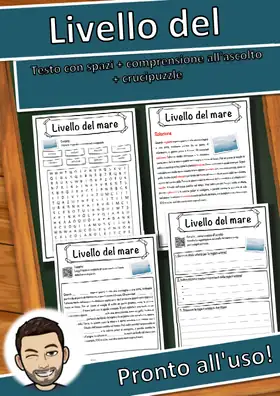
Livello del mare – Scheda didattica classe quarta e quinta: testo con spazi vuoti e crucipuzzle
Università – Scheda didattica classe quarta e quinta: testo con spazi vuoti e crucipuzzle
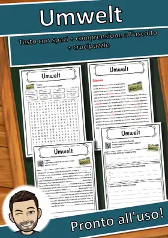
Umwelt – Scheda didattica classe quarta e quinta: testo con spazi vuoti e crucipuzzle
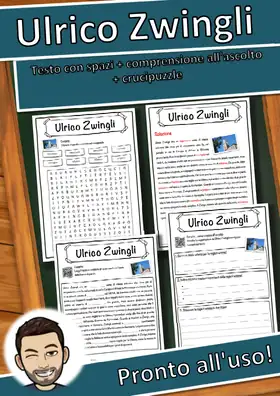
Ulrico Zwingli – Scheda didattica classe quarta e quinta: testo con spazi vuoti e crucipuzzle
Nessun materiale trovato: prova con un'altra parola o un altro filtro.